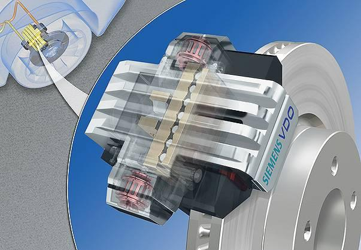
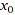
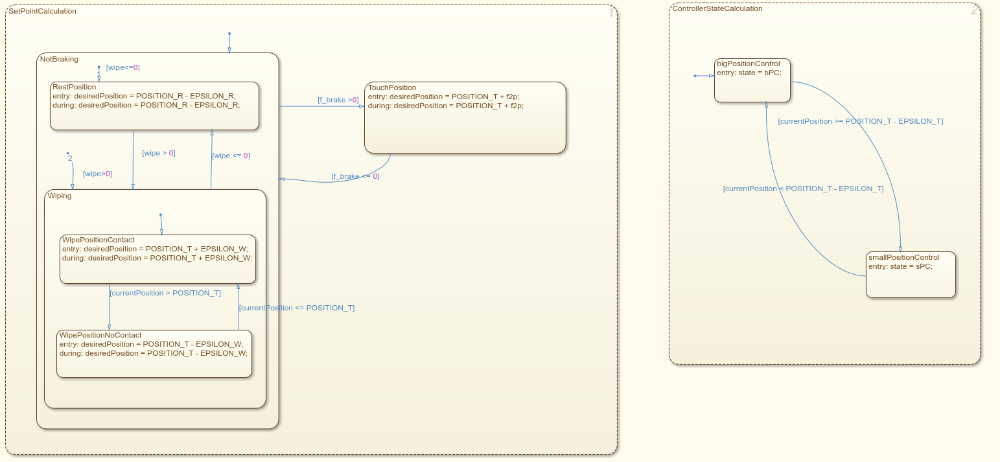
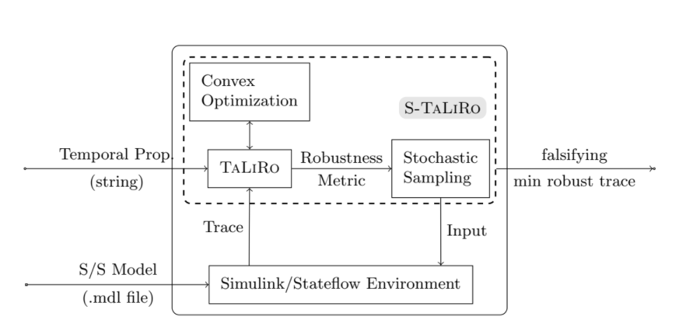
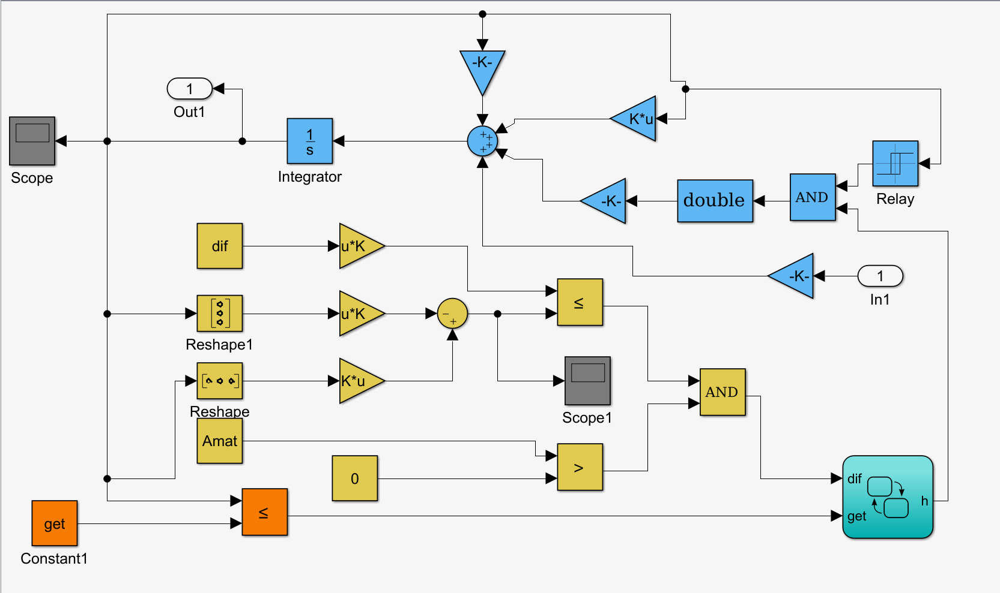
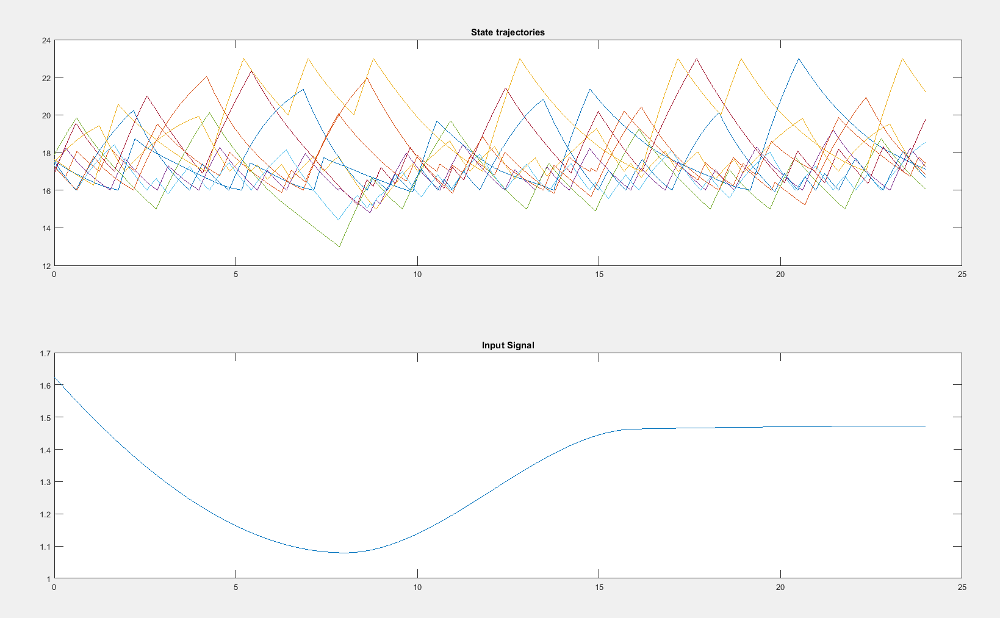

First project that I decided to run and analyze is Dr. Jens Oehlerking's project of Electro-Mechanical Braking System (EMB). Electro-Mechanical Braking System works similary as Hydraulic brake system, but instead of direct connection between the pedal and the calipers, there is a wire and number of sensors that measure driver's intention to break and if so, central unit sends a signal to all four wheel to break according to the situation. Instead of fluid hoses there are wires (at least 2 buses for each caliper). Advantage is that each caliper can break with different intensity according to the situation. But there is need for sensors of temperature, clamp force and actuator position.
Dr. Jens Oehlerking used in his study hybrid verification tools (iSAT-ODE, Flow*, S-TALIRO tools) on this project which represents an experimental electro-mechanical braking system. Project consists of a plant model and a controller comprising both feedback and feedforward control. In study they show us model simplifications in order to obtain useful results from the verification tools. Particular focus here are verification results including parameter variations within the model to achieve a quantifiable form of robustness for the property in question.

EMB consists of electrical engine, which is used to push brake calipers against brake disc thus resulting in vehicle deceleration. When the contact with breaking disc has already been established, the electrical engine can be used to add additional braking force. There is a certain point  where caliper already touches the disc and from this point on the breaking force increases. Whole EMB system is operated by a controller which discrete behavior has been extracted into a Stateflow chart so it is easier to see the hybrid automaton structure of the model.

After deeper digging and some consultations I have opted my attention on S-TALIRO toolbox and its functionality.
This model is called experimental, because it is derived from reality. We depend on assumptions and we omit aspects that are according to our judge unimportant, but we can be wrong and by simplifying reality into such model we loose precision, which may lead to incorrect conclusions. That is the reason why this model is only experimental.
Model consist of plant (designed first) and controller (designed second). A plant in control theory is the combination of process and actuator. A plant is often referred to with a transfer function (not uncommonly in the s-domain) which indicates the relation between an input signal and the output signal of a system without feedback, commonly determined by physical properties of the system. An example would be an actuator with its transfer of the input of the actuator to its physical displacement. In a system with feedback, the plant still has the same transfer function, but a control unit and a feedback loop (with their respective transfer functions) are added to the system. [1]
This tool searches for trajectories of minimal robustness in Simulink/Stateflow. It uses randomized testing based on stochastic optimalization techniques (Monte-Carlo, Ant-Colony optimalization, etc.). It is modular and new stochaistic optimalization algorithms can be easily implemented and integrated.
S-Taliro searches for counterexamples to Metric Temporal Logic (MTL) [2] properties for non-linear hybrid systems. This goal is achieved by previously noted minimization of a robustness metric. To achieve this goal S-Taliro uses either m-functions in Matlab which would describe the system, but preferably Simulink/Stateflow models that can S-Taliro use for simulation under given circumstances.
In it's core S-Taliro uses combination of stochastic sampling together with Simulink simulation runs and a little bit of optimalization. Using this approach, tool finds the smallest robustness which is desirable, because traces with lower robustness value are closer in distance to falsifying traces. If the tool detect a negative robustness we acquire a trace which falsify temporal logic properties. Robustness is calculated by Taliro module, but the computation is based on the results of convex optimalization problems used to compute signed distances. The structure of the tool and it's architecture is describe on this picture: [3]

How to use S-TaLiRo
Prerequisite: Input signals must be provided to the Simulink model through input ports
Execute S-TaLiRo tool with the name of the Simulink model as parameter.
Give S-TaLiRo set of initial conditions
Give S-TaLiRo constraints on the input signals
Give S-TaLiRo Metric Temporal Logic (MTL) specification
Select stochaistic optimalization Algorithm (Simulated Annealing, Ant Colony Optimization, Genetic Algorithms and Cross Entropy)
Georgios Fainekos has written S-Taliro quick guide. It explains how should be S-Taliro used, what it can do and how it works. S-Taliro takes a system model (such as Simulink model) and also a set of MTL specifications and calculate different trajectories, experiment on a certain surrounding around the simulation to be able detect robustness. Based on the robustness calculate stochastic optimizations and creates new parameters specification.
Using this approach S-Taliro tries many different runs of the simulation, but with reasonable parameters which are altered in order to enclose as much as possible to real world situations. Robustness is calculated and in case that constraints are violated, witness trajectory is generated.
S-Taliro has a certain requirements on the model, for example input signals has to have a form of input ports. To define specifications authors recommend using output ports. This way S-Taliro treats model as black-box.
There are mentioned two algorithms in the quick guide:
fw_taliro - based on formula rewriting, suitable for runtime monitoring [4]
dp_taliro - based on dynamic programming, suitable for offline testing [5]
Installation of S-Taliro is easy, just download the software from Source and run function in file setup_staliro.m in MATLAB. There may be a problem with paths, at least I have faced it on both environments; Linux and Windows. As a hotfix solution I just overwritten the relative paths to absolute path form and marked a note to find more elegant solution (TODO!) in future for my virtual environment which is still under construction.
Another possible problem can be compilation of C++ files, because on Linux I had pre-installed gcc version 7.something.something and recommended gcc version for the files is 4.4.*. Naturally GCC couldn't compile the source code due to some issues with comments or whatsoever. I have also noticed that there is an old version of Matlab 2013, so I switched to Windows where 2017 version of MATLAB is installed. For compilation MATLAB used default MinGW and compilation ran without problems.
After successful installation of S-Taliro tools I started to examine demos.
Room heating benchmark HEAT30
This benchmark model was introduced by Ansgar Fehnker and Franjo Ivančić in paper Benchmarks for Hybrid Systems Verification [6]. Sadly our library has no available copy of this document, though I have requested that library should borrow one.
This model represent 10 rooms and 4 heaters which result in 3 360 discrete locations. The goal for veryfication is to verify that for rooms up to xn no room temperature drops below [14.50; 14.50; 13.50; 14.00; 13.00; 14.00; 14.00; 13.00; 13.50; 14.00]. The initial conditions are temperatures in range of [17,18]. The input signal was parametrized using a piecewise cubic Hermite interpolating polynomial with 4 control points evenly distributed in the simulation time. Look of the model in Simulink:

When S-Taliro is used to falsify the model, it can run for example for 40 minutes and find a witness Falsifying input signal together with initial conditions and resulting trajectories like in my case when I ran the tool. This is the output:

Creation of a Simulink/Stateflow system
Now the goal is to create a Simulink/Stateflow model that would possibly point out holes in S-Taliro toolbox. Based on such findings we would create a method that is performing better than S-Taliro on certain cases. As a promising model seems Master's thesis of Jan Kacetl. He is describing a mathematical model of EV powertrain test bench and in addition he already created a Simulink/Stateflow model which we could reuse.
Bibliography
[1] FRANKLIN, Gene F., J. David POWELL a Abbas EMAMI-NAEINI. Feedback control of dynamic systems. 4th ed. Upper Saddle River: Prentice Hall, c2002. ISBN 0-13-032393-4.
[2] Koymans, R. Real-Time Syst (1990) 2: 255. https://doi.org/10.1007/BF01995674
[3] Annpureddy Y., Liu C., Fainekos G., Sankaranarayanan S. (2011) S-TaLiRo: A Tool for Temporal Logic Falsification for Hybrid Systems. In: Abdulla P.A., Leino K.R.M. (eds) Tools and Algorithms for the Construction and Analysis of Systems. TACAS 2011. Lecture Notes in Computer Science, vol 6605. Springer, Berlin, Heidelberg
[4] H. Kress-Gazit, G. E. Fainekos and G. J. Pappas, "Temporal-Logic-Based Reactive Mission and Motion Planning," in IEEE Transactions on Robotics, vol. 25, no. 6, pp. 1370-1381, Dec. 2009.
[5] Sriram Sankaranarayanan and Georgios Fainekos. 2012. Falsification of temporal properties of hybrid systems using the cross-entropy method. In Proceedings of the 15th ACM international conference on Hybrid Systems: Computation and Control (HSCC '12). ACM, New York, NY, USA, 125-134. DOI=http://dx.doi.org/10.1145/2185632.2185653
[6] Fehnker A., Ivančić F. (2004) Benchmarks for Hybrid Systems Verification. In: Alur R., Pappas G.J. (eds) Hybrid Systems: Computation and Control. HSCC 2004. Lecture Notes in Computer Science, vol 2993. Springer, Berlin, Heidelberg